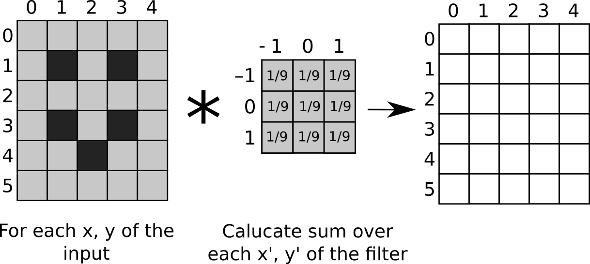

Submission deadline: 30.05.21 23:55h
Please ensure that all files you created also contain your name and your IDM ID and also your partner's name and IDM ID if you're not working alone.
Each exercise has 10 points. You have to achieve 30 of 60 points in six homework exercises to pass the module.
2D Convoultion and Image Filters
In this exercise, we are using our image class from exercise 3 to build the 2D convolution, which you already implement for the 1D case in exercise 2.
mt.Image Filter
4 Points:
Like in Exercise 2, we want to be able to convolve our image signal.
Infact, we will learn a lot of new ways to process images.
Often, we need to create an output image of same size.
Let's create an interface (src/main/java/mt/ImageFilter.java) for that, so we only need to implement this once.
package mt;
public interface ImageFilter {
default mt.Image apply(mt.Image image) {
Image output = new Image(image.width(), image.height(), image.name() + " processed with " + this.name());
apply(image, output);
return output;
}
default void apply(mt.Image input, mt.Image output) {
throw new RuntimeException("Please implement this method!");
}
String name();
}
Ok. Now the convolution. The class has already a method normailze that we will need later. It uses a method sum(), which we need to implement in our Signal class. The method sums up all values of our signal:
public float sum() //< sum of all signal values
The code for the convolution should go to src/main/java/mt/LinearImageFilter.java
// <your name> <your idm>
// <your partner's name> <your partner's idm> (if you submit with a group partner)
package mt;
public class LinearImageFilter extends Image implements ImageFilter {
public void normalize() {
double sum = sum();
for (int i = 0; i < buffer.length; i++) {
buffer[i] /= sum;
}
}
}
Create a constructor for it. Recall how we implemented LinearFilter!
minIndexX and minIndexY need to be set to $-\lfloor L_x/2 \rfloor$ and $-\lfloor L_y/2 \rfloor$ when $L_x$ is the
filter's width and $L_y$ the filter's height.
public LinearImageFilter(int width, int height, String name)
Convolution in 2-d works similar to convolution in 1-d.
$$K_x = \lfloor L_x/2 \rfloor$$ $$K_y = \lfloor L_y/2 \rfloor$$ $$g[x,y] = \sum_{y'=-K_y}^{+K_y} \sum_{x'=-K_x}^{+K_x} f[x-x', y-y'] \cdot h[ x', y' ] $$ $$g[x,y] = \sum_{y'=\text{h.minIndexY}}^{\text{h.maxIndexY}} \sum_{x'=\text{h.minIndexX}}^{\text{h.maxIndexX}} f[x-x', y-y'] \cdot h[ x', y' ] $$
Remember to use atIndex and setAtIndex to get and set the values.
Implement the convolution in the method apply.
The result image was already created by our interface ImageFilter.
public void apply(Image image, Image result)


Source: https://github.com/vdumoulin/conv_arithmetic
Now it's almost time to test. We just need to add another method to our Signal class:
// Needs: import java.util.Random
public void addNoise(float mean, float standardDeviation) {
Random rand = new Random();
for (int i = 0; i < buffer.length; i++) {
buffer[i] += mean + rand.nextGaussian() * standardDeviation;
}
}
Now you can use the file src/test/java/mt/LinearImageFilterTests.java.
Gauss Filter
2 Points
The code for the Gauss filter should go to src/main/java/mt/GaussFilter2d.java.
The Gauss filter is a LinearImageFilter with special coefficients (the filter has the same height and width).
// <your name> <your idm>
// <your partner's name> <your partner's idm> (if you submit with a group partner)
package mt;
public class GaussFilter2d extends LinearImageFilter {
}
It has the following constructor
public GaussFilter2d(int filterSize, float sigma)
In the constructor, set the coefficients according to the unormalized 2-d normal distribution with standard deviation $\sigma$ (sigma).
Math.exp is the exponetial function. Use setAtIndex: $x$ should run from minIndexX to maxIndexX and $y$ from minIndexY to maxIndexY.
$$ h[x,y] = \frac{1}{2 \pi \sigma^2}\mathrm{e}^{-\frac{x^2+y^2}{2 \sigma^2}}$$
Call normalize() at the end of the constructor to ensure that all coefficients sum up to one.
Test your Gauss filter in Exercise04.java.
Use arbitray values for sigma and filterSize.
The Gauss filter will blur your input image clearly if you chose a large value for sigma.
There is also a unit test file that you can use: src/test/java/mt/GaussFilter2dTests.java
More Filters!
4 Points
Lets try implement even more filters, to see in how many ways we can use our LinearImageFilter class!
The code for the Average filter should go to src/main/java/mt/Averagefilter2d.java.
The Average filter is a LinearImageFilter with special coefficients (the filter has the same height and width).
// <your name> <your idm>
// <your partner's name> <your partner's idm> (if you submit with a group partner)
package mt;
public class AverageFilter2d extends LinearImageFilter {
}
It has the following constructor
public AverageFilter2d(int filterSize)
Use setAtIndex: $x$ should run from minIndexX to maxIndexX and $y$ from minIndexY to maxIndexY. The filter takes the average around its neighbours.
$$ h[x,y] = \frac{1}{filterSize*filterSize}$$
The code for the Derivative filter should go to src/main/java/mt/Derivativefilter2d.java.
The Derivative filter is a LinearImageFilter and has always a fixed size of $3$.
// <your name> <your idm>
// <your partner's name> <your partner's idm> (if you submit with a group partner)
package mt;
public class DerivativeFilter2d extends LinearImageFilter {
}
It has the following constructor, which uses a boolean to termine its direction. The standart should be in x direction.
public DerivativeFilter2d(boolean transpose)
The filter computes the derivative of each point in either x or y direction.
$$ \partial x = [-1,0,1] , \partial y = [-1,0,1]^T$$
The last filter we implement is a sharpening filter.
The code for the Sharpening filter should go to src/main/java/mt/Sharpeningfilter2d.java.
The Sharpening filter is a LinearImageFilter with a kernel size of $3x3$.
// <your name> <your idm>
// <your partner's name> <your partner's idm> (if you submit with a group partner)
package mt;
public class SharpeningFilter2d extends LinearImageFilter {
}
It has the following constructor
public SharpeningFilter2d(float focus)
Use setAtIndex: $x$ should run from minIndexX to maxIndexX and $y$ from minIndexY to maxIndexY. The filter takes the negative average of its neighbourhood and enhances its current position by the value of focus.
$$ h[x,y] = -\frac{(focus-1)}{8}$$ $$ h[0,0] = focus $$
My filter results look like this:
 |
 |
|
| Gauss Filter | Derivate Filter in x driection | Derivate Filter in y driection |
|---|---|---|
 |
||
| Average Filter | Sharpening Filter |
Can you reproduce them?
Submitting
Please ensure that all files you created also contain your name and your IDM ID and also your partner's name and IDM ID if you're not working alone.
Then, compress your source code folder src to a zip archive (src.zip) and submit it on studOn.